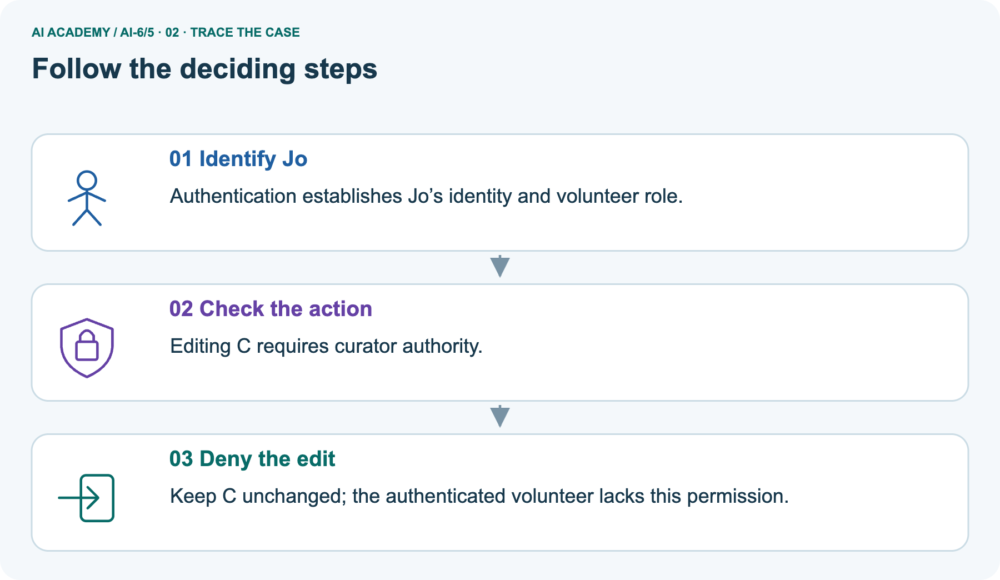
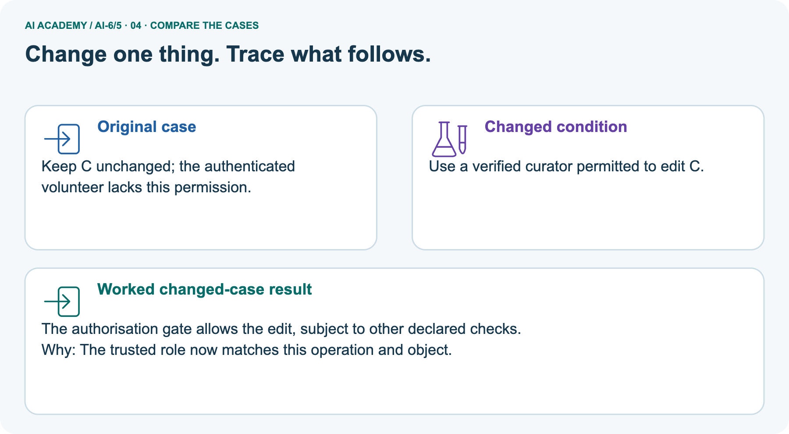
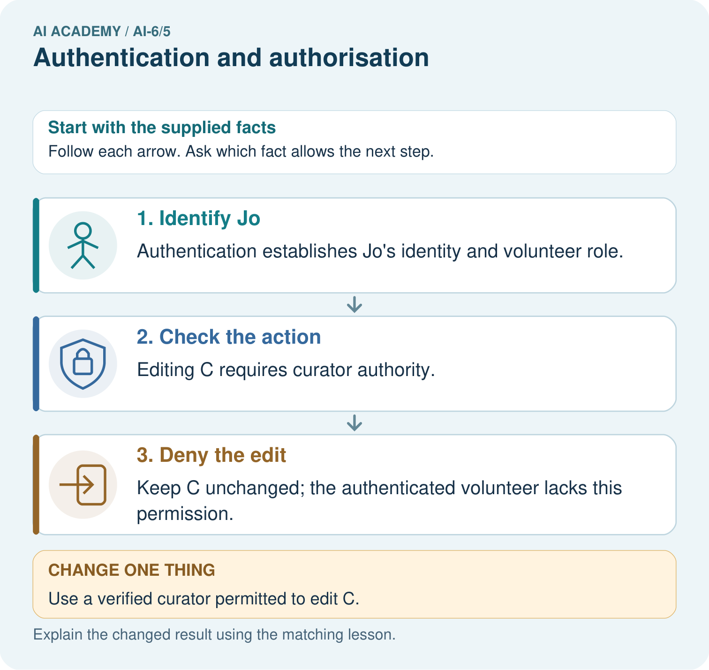
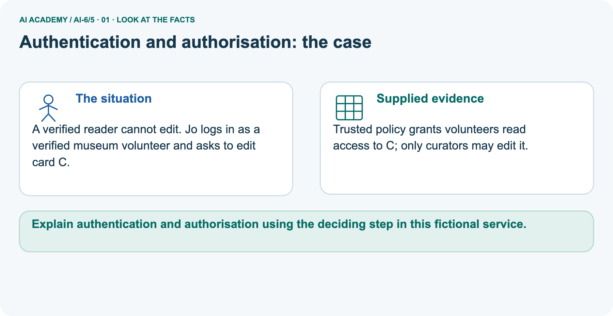
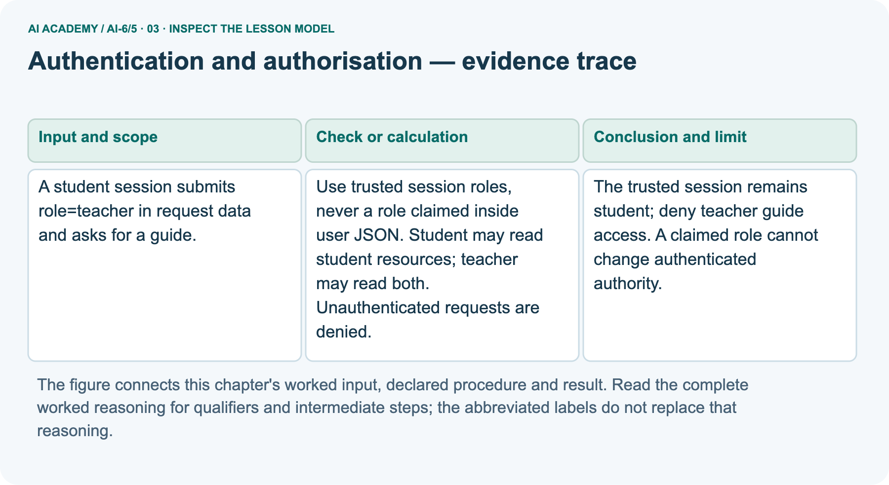
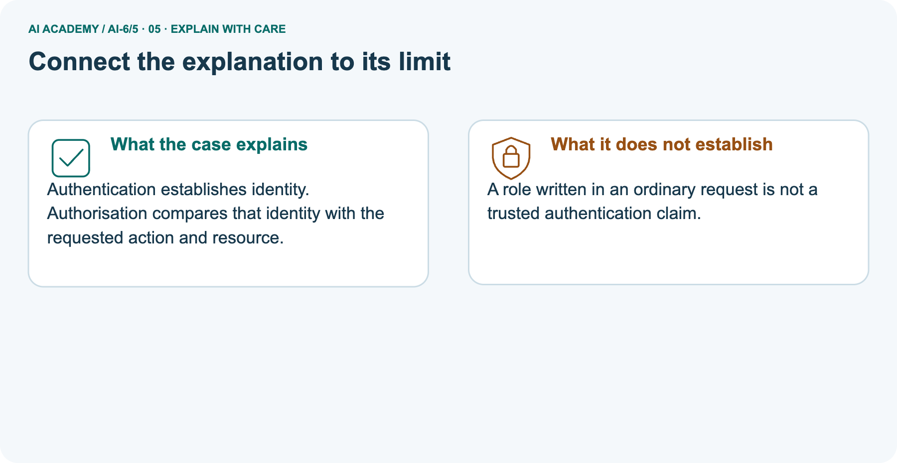
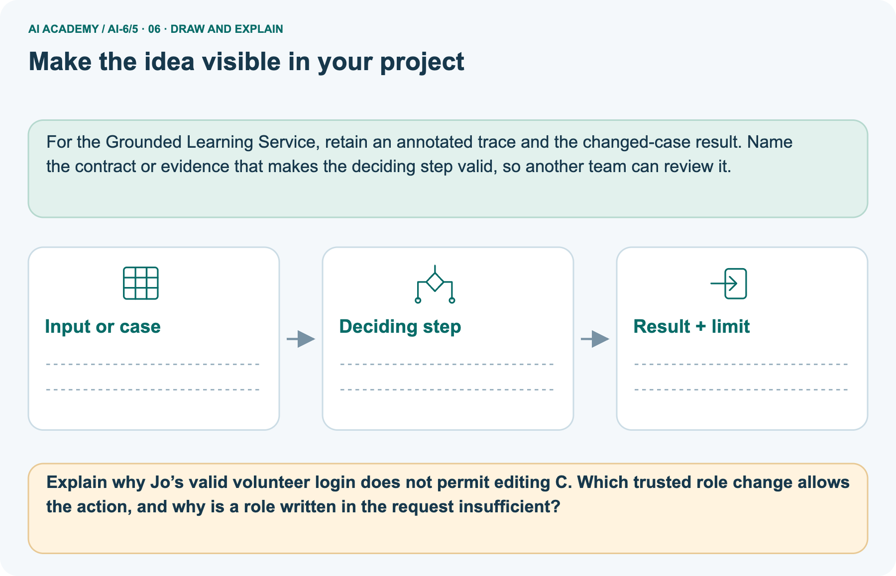

AI Academy · Level 6 · Grade 11 · Week 5 · Student lesson
Authentication and authorisation
Learn to understand, design, build, test and explain AI systems responsibly.
Project: Grounded Learning Service
THE CONNECTED WEEK
Verify the authority source. Name the action. Check the resource.
Explain why a trusted identity context and a resource-specific permission decision are separate requirements.
Keep one habit: Read policy → client-role trace → museum picture → permission probes → local audit → individual role reasoning.
Main lesson · Section 1
Knowing who someone is does not grant every action
Check trusted identity context, the requested operation and the target resource.
Learning goals
I can explain the mechanism and terminology of authentication and authorisation.
I can apply the stated procedure to a new case with a traceable result.
I can identify an assumption or limitation and design a revealing follow-up.
Retrieve configuration and trust boundaries
Close your notes first. A rough first answer helps us choose the right starting point; it is not a score for your ability.
Without opening the old lesson, explain one key idea from Configuration and secrets. Give an example and a mistake that the idea helps you avoid.
Without opening the old lesson, explain one key idea from Architecture and data flow. Give an example and a mistake that the idea helps you avoid.
After trying, check the relevant lesson or ask your teacher. Change the part of your explanation that the evidence shows was wrong.
Prerequisite and starting response
Recall Configuration and secrets. Explain why a recorded result needs its input conditions and evidence source before it can support a claim.
End goal
Explain authentication and authorisation using the deciding step in this fictional service.
Earlier wording, alternatives and picture transcripts
Your learning target
Remember before reading
This week you will practise:
Explain the mechanism and terminology of authentication and authorisation
Apply the stated procedure to a new case with a traceable result
Identify an assumption or limitation and design a revealing follow-up
Retrieve what you already know
This week’s end goal
Main lesson · Section 2
Ask identity, action and resource as separate questions
A trusted login and an allowed operation are different requirements.
Begin with the school-office example
A school office may know that a visitor is a student. That does not make the visitor a teacher or permit access to a teacher guide. Authentication establishes an identity or session; authorization applies the service’s permission rules to an action and a resource. In a real system, roles come from trusted server-side records or verified claims under the system’s policy, not a label the visitor writes on a request.
Our example starts with trusted classroom fixtures rather than implementing a login system.
Define authentication and authorization
Authentication identifies an actor; authorisation decides whether that actor may perform a particular operation on a particular resource.
Complete classroom read policy
| Question | School-service policy used here |
|---|---|
| Who is the actor? | Read the trusted session fixture; client-written role is not authoritative |
| What is requested? | Read one declared resource |
| Student role | May read student resources; may not read teacher-only resources |
| Teacher role | May read student and teacher resources |
| No recognized trusted session or unknown role | Deny under this service policy |
| Unknown resource classification | Deny rather than guessing permission |
| Permission decision | Must precede reading the resource body |
| Scope | Local policy exercise; no real login, cookies, expiry or writes |
Name given and missing evidence
Earlier wording, alternatives and picture transcripts
Begin by writing the question the procedure is intended to answer. Identify the information already supplied, the information it will produce and the information still missing.
These are constructed classroom examples; they do not require live accounts, private records or an external service. Do not treat a plausible explanation as a measured outcome.
Main lesson · Section 3
Trace a role claim without changing the trusted session
Never let requested data redefine the caller’s permissions.
Original trusted-role policy
Use trusted session roles, never a role claimed inside user JSON. Student may read student resources; teacher may read both. Unauthenticated requests are denied.
Complete student-to-guide decision trace
The trusted role wins over the role written in the request
State the contract before tracing
Before applying the procedure, write its units, denominator or decision boundary where relevant. A partner should be able to repeat each step using the same inputs.
If a required input is absent or violates the stated contract, record that condition explicitly instead of quietly replacing it with a convenient value.
Explain the visual
Point to the input, the deciding step and the result in this week’s visual. Explain the same step in ordinary words. A picture helps when you can say what each part represents.
Earlier wording, alternatives and picture transcripts
Authentication and authorisation — evidence trace
Connect the picture and the explanation
Main lesson · Section 4
Change trusted authority rather than the request’s label
Keep the resource and operation fixed when comparing permission outcomes.
Current task and response
A student session submits role=teacher in request data and asks for a guide. Show the intermediate steps and give the conclusion with its scope.
Predict the verified-curator picture
Change: Use a verified curator permitted to edit C.
Check after predicting
Prediction: The authorisation gate allows the edit, subject to other declared checks.
Reason: The trusted role now matches this operation and object.
Earlier wording, alternatives and picture transcripts
Compare a familiar case with a changed case
Change one thing in the pictured case
Main lesson · Section 6
Separate a valid login from permission to edit a particular object
Apply the policy belonging to the current service.
Main client-claimed-role request and bounded decision
A student session submits role=teacher in request data and asks for a guide.
The trusted session remains student; deny teacher guide access. A claimed role cannot change authenticated authority.
Keep the trace’s scope
Compare the intermediate evidence with the final statement. Explain why each number or decision follows from the stated inputs.
The conclusion belongs to this scenario and procedure; changing the inputs, evaluation population or authority can change what it establishes. Retain the raw record so a later revision can be compared honestly.
Separate museum actor, card and permissions
A verified reader cannot edit. Jo logs in as a verified museum volunteer and asks to edit card C.
Trusted policy grants volunteers read access to C; only curators may edit it.
The main school policy has student/teacher roles and read-only resource access. The picture is a separate museum policy: trusted volunteer Jo may read card C, while only a trusted curator may edit C. A valid volunteer login does not grant edit permission. Changing to an appropriately verified curator allows the permission gate to pass, subject to other checks.
This is an authorization decision, not evidence that an edit has executed or that card contents changed. School teacher rights do not automatically become museum curator rights.
Trace identity context and edit gate



Read the picture one step at a time
Authentication establishes identity. Authorisation compares that identity with the requested action and resource.
Predict a trusted curator permitted to edit C
Change one thing: Use a verified curator permitted to edit C. Predict the result before checking the explanation. What remains the same?
Check after predicting



Explain why a request label is insufficient
A role written in an ordinary request is not a trusted authentication claim.
Read the labelled picture: Explain why Jo’s valid volunteer login does not permit editing C. Which trusted role change allows the action, and why is a role written in the request insufficient?
Reference: original read-policy helper
Optional local lab: predict the printed result before running this standalone Python 3 example. Change one relevant boundary input, record the outcome and state the contract or statistical assumptions.
The program uses fictional values and the Python standard library; it performs no external operations.
def may_read(role, resource_role):
if role not in ('student', 'teacher') or resource_role not in ('student', 'teacher'):
return False
return role == 'teacher' or resource_role == 'student'
print(may_read("student", "teacher"))Earlier wording, alternatives and picture transcripts
Learn from the worked case
Cover the result before checking it. Say what is given, choose the procedure, and follow one step at a time. Then uncover the result and explain your first mismatch. Ask why a step is allowed, not only what number it produces.
A pictorial worked case: Authentication and authorisation
The facts we will use



Why this result follows
What this example does not establish
Main lesson · Section 7
Test the policy at the resource and operation boundary
A permitted read does not imply an allowed edit or a working login system.
Core authentication-versus-permission qualification
Successful authentication does not grant every resource or operation.
A useful check asks what would make the reasoning fail. Distinguish a failure to execute the declared procedure from a weakness in the procedure itself.
The first may require a correction; the second requires an explicitly revised method and new evidence. Preserve unsuccessful cases so an improved result cannot hide the original problem.
Complete normal, denied and separate-policy probes
| Permission probe | Expected reasoning |
|---|---|
| Trusted student asks for student lesson | Allowed read under the school policy |
| Trusted student claims teacher in request; asks for teacher guide | Deny before reading body; trusted role remains student |
| Unknown trusted role or unknown resource label | Deny under the explicit allowlist |
| Museum volunteer reads C | Allowed by that separate museum policy |
| Same volunteer edits C | Denied; successful identity verification does not add this permission |
| Verified curator edit gate passes | Other declared checks and actual execution still remain |
| A helper returns True | Evidence of its policy calculation on this input; not proof of a complete authentication system |
Guided explanation and repair
A report omits this qualification: Successful authentication does not grant every resource or operation. Explain how omitting it could change a reader's interpretation, and write an accurate replacement.
Earlier wording, alternatives and picture transcripts
Locate the earliest unsupported step
Main lesson · Section 8
Practise identifying the trusted authority source
Name the actor’s verified context, action, object and policy.
Current explanation and guided scope check
Explain the weekly mechanism in your own words. Use the worked scenario to name its input, decision rule and output.
Supported W2 record
Use workbook W2 for the connected example “Authentication and authorisation”. First fill the input and rule boxes. Try the middle steps before asking for a hint. After a hint, try the next step yourself.
| Plan | Do | Check |
|---|---|---|
| What is given? Which rule or procedure applies? | Record each intermediate step. | Does the result follow? What remains unknown? |
Explain your trace to a partner. Your partner points to one step to check. Swap roles on the next case. Each person writes their own explanation.
Individual future-case limit check
Use the worked case for Authentication and authorisation. Proposed explanation: “The worked result establishes every future case”. Decide whether this explanation is supported.
Point to the step or supplied fact that decides; explain your repair if needed.
Answer on your own before discussion. If you are unsure, say which step you need help with.
Museum picture response
Explain why Jo’s valid volunteer login does not permit editing C. Which trusted role change allows the action, and why is a role written in the request insufficient?
Keep the later role decisions for individual explanation
This is supported practice. Keep the separately named independent case for an attempt before feedback.
Earlier wording, alternatives and picture transcripts
Practise with less help: Trace the worked case
Check your reasoning
Explain the picture
Main lesson · Section 9
Run a complete local permission and authority-source audit
Inspect which authority source is used and whether denied content is ever read.
Current client-claimed-role investigation
A student session submits role=teacher in request data and asks for a guide. Show the intermediate steps and give the conclusion with its scope.
Complete runnable local audit
"""Trusted classroom session fixtures; no login protocol or real identities."""
RESOURCES={'lesson':{'role':'student','body':'fictional student lesson'},
'guide':{'role':'teacher','body':'fictional teacher guide'}}
def may_read(role,resource_role):
if role not in ('student','teacher') or resource_role not in ('student','teacher'):
return False
return role=='teacher' or resource_role=='student'
def read_request(trusted_session,request,trace):
trace.append('check_trusted_session_fixture')
if not trusted_session or trusted_session.get('role') not in ('student','teacher'):
return {'status':'denied'}
trace.append('authorize_read')
key=request.get('resource_id')
if key not in RESOURCES:
return {'status':'denied'}
role=trusted_session['role'] # request.get('role') is never consulted
if not may_read(role,RESOURCES[key]['role']):
return {'status':'denied'}
trace.append('read_allowed_body')
return {'status':'answered','source_id':key,'text':RESOURCES[key]['body']}
student_session={'actor':'fictional-learner','role':'student'}
trace=[]
spoofed=read_request(student_session,{'resource_id':'guide','role':'teacher'},trace)
assert spoofed=={'status':'denied'} and 'read_allowed_body' not in trace
assert student_session['role']=='student'
print('Student with client-claimed teacher role:',trace,spoofed)
public_trace=[]
public=read_request(student_session,{'resource_id':'lesson'},public_trace)
assert public['status']=='answered'
print('Student allowed read:',public_trace,public)
unknown_trace=[]
assert read_request(student_session,{'resource_id':'unknown'},unknown_trace)=={'status':'denied'}
assert not may_read('administrator','teacher') and not may_read('teacher','unknown')
# Separate museum authorization decision only: no editing is executed.
def museum_allowed(trusted_role,action,resource):
return resource=='C' and ((trusted_role=='volunteer' and action=='read')
or (trusted_role=='curator' and action in ('read','edit')))
assert museum_allowed('volunteer','read','C')
assert not museum_allowed('volunteer','edit','C')
assert museum_allowed('curator','edit','C')
print('Museum volunteer read/edit:',museum_allowed('volunteer','read','C'),museum_allowed('volunteer','edit','C'))
print('Museum curator edit permission:',museum_allowed('curator','edit','C'))
print('Permission decisions only; real authentication, session expiry and write execution are absent.')
Expected traces, separate policy and limits
Predict the event trace for the student requesting a teacher guide while claiming role=teacher. The local simulation reads the trusted fixture, denies before read_allowed_body, and leaves the session unchanged. Compare an allowed student-lesson read and unknown resource/role cases.
The helper assumes the supplied structured request and trusted fixture; full input validation and actual identity verification belong to separate components. The museum helper only decides permission and never edits a card. No real credentials, accounts, session expiry or external operations are used.
The later school role-set task consolidates a policy already taught; require individual reasons and use a fresh action/resource scenario if claiming fresh independent transfer.
Evidence ledger and reflection
| Record | Your evidence |
|---|---|
| Given input and fixed rule | |
| Prediction before checking | |
| Actual result, or “not run” | |
| First mismatch and one explanation | |
| Boundary or missing input and expected response |
On paper, trace the supplied procedure. If code is provided, predict before running it in a local practice file. Never write an expected answer as though it were an observed run.
Before trying: what do I expect, and why? While trying: which step could first go wrong? Afterwards: what did I actually observe, and what should change? Keep “not run” if you only traced the procedure.
Reference: original policy helper
def may_read(role, resource_role):
if role not in ('student', 'teacher') or resource_role not in ('student', 'teacher'):
return False
return role == 'teacher' or resource_role == 'student'
print(may_read("student", "teacher"))Earlier wording, alternatives and picture transcripts
Predict, investigate and preserve the evidence
Plan → try → check
Main lesson · Section 14
Try alone: explain the school roles against one resource
Use the taught policy and give a reason for every outcome.
Complete individual role-decision set
Actor roles are none, student, teacher; target is teacher guide. Decide each under the policy.
First attempt and support record
Attempt this case before feedback. Record any help. Earlier examples below are further practice; a case already practised with feedback cannot establish fresh transfer.
Feedback after trying
Attempt the independent case before hints. Record whether you worked alone, used a hint or followed a model. After feedback, fix the first unsupported step and explain why it changed.
A later check uses a changed case, not a copied answer.
Earlier wording, alternatives and picture transcripts
Independent case: Apply a new case independently
Attempt this without hints
Actor roles are none, student, teacher; target is teacher guide. Decide each under the policy.
Record support used: none, hint or teacher explanation. After feedback, a different case is needed to demonstrate independence.
Use feedback to improve
Main lesson · Section 11
Save a permission policy with positive and denied examples
Keep the trusted actor source separate from request fields.
Project task and artifact
Add a labelled authentication and authorisation evidence sheet to Grounded Learning Service. Show how you can explain the mechanism and terminology of authentication and authorisation.
Use the supplied fictional case and keep its inputs, intermediate steps, calculation or prediction, and limitation. Connect this record to last week’s record; a matching answer without a trace is insufficient.
| Project evidence | Record |
|---|---|
| Component and version | |
| Inputs permitted at prediction time | |
| Trace and comparison with earlier work | |
| Failure, limit and human review |
Actual run or trace and limitations
For the Grounded Learning Service, retain an annotated trace and the changed-case result. Name the contract or evidence that makes the deciding step valid, so another team can review it.
Earlier wording, alternatives and picture transcripts
Evidence for your project
Main lesson · Section 16
Finish with an authority source and a resource-specific decision
A recognized identity does not imply permission for every operation.
Retrieve and explain
Close your notes. Explain this goal in your own words: Explain the mechanism and terminology of authentication and authorisation
Plan a changed-case return
If you are unsure, return to the worked picture and explain one arrow. If you are ready, change an input or assumption and justify your prediction.
Save your workbook evidence. At the next review, try a different case before opening your old answer.
Reference bank and extra practice
Choose the reference that helps your next step.
Reference · Use service vocabulary precisely
Reference · Section 5
Reference · Use service vocabulary precisely
Connect each term to an input, operation, evidence source or outcome.
Vocabulary and your explanation
| Word | Meaning |
|---|---|
| Authentication | Checking an actor identity or session |
| Authorisation | Checking permission for an operation/resource |
| Trusted role | A role established by the service rather than user-claimed data |
Extra challenge · Explain a stronger case
Reference · Section 10
Extra challenge · Explain a stronger case
Choose the next challenge after the main route.
Explain,repair and extend
Explain the weekly mechanism in your own words. Use the worked scenario to name its input, decision rule and output.
A report omits this qualification: Successful authentication does not grant every resource or operation. Explain how omitting it could change a reader's interpretation, and write an accurate replacement.
For the worked scenario, propose one additional case that could reveal a failure, describe its expected outcome before running it, and explain what would need to remain fixed for a fair comparison.
Do not reuse W4 as a new final test after receiving feedback.
Explain → apply → challenge
Reference · Check the service reasoning and its limits
Reference · Section 12
Reference · Check the service reasoning and its limits
Use after practice; keep the selected independent case for its first attempt.
Current explanation and response
Complete the supported workbook tasks before attempting W4 independently. Record any hints or help used. After feedback, use the teacher's fresh retry rather than copying the earlier answer.
For a project, select a relevant new case, predict the outcome from the declared rule and preserve the result alongside any revision.
For the worked scenario, propose one additional case that could reveal a failure, describe its expected outcome before running it, and explain what would need to remain fixed for a fair comparison.
Do not reuse W4 as a new final test after receiving feedback.
Extra practice · Revisit the complete trace
Reference · Section 13
Extra practice · Revisit the complete trace
Predict before reading the supplied steps.
Complete trace and evidence
Complete evidence record
Authentication and authorisation — evidence trace
Follow the input through the stated procedure to its result. Cover the result first, predict it, then explain every intermediate step. The text/table accompanies the figure so the example can be read without colour.
Reference · The earlier route checklist
Reference · Section 15
Reference · The earlier route checklist
Use one main route rather than repeating the lesson.
Targets,route and first prediction
Start with this question: A verified reader cannot edit. Jo logs in as a verified museum volunteer and asks to edit card C.
| By the end, I can | How I will show it |
|---|---|
| Explain the mechanism and terminology of authentication and authorisation | Explain the deciding step, show a trace or test, and state one limit. |
| Apply the stated procedure to a new case with a traceable result | Explain the deciding step, show a trace or test, and state one limit. |
| Identify an assumption or limitation and design a revealing follow-up | Explain the deciding step, show a trace or test, and state one limit. |
Remember → watch and explain → try with help → investigate → try independently → keep project evidence. Your teacher may spread this lesson across several classes.
Keep your first prediction. Compare it with what the evidence shows and explain any change.
Extra practice · Predict,check and repair
Reference · Section 17
Extra practice · Predict,check and repair
Keep supported feedback separate from the independent case.
First supported question and optional hint
A verified reader cannot edit. Jo logs in as a verified museum volunteer and asks to edit card C.
Which labelled step matches this detail? Keep C unchanged; the authenticated volunteer lacks this permission.
1. Check the action
2. Deny the edit
3. Identify Jo
Hint if needed: Read the steps in the pictorial case. Match the supplied detail to the stage that performs or records it.
Practice 1: explain the deciding evidence
Check after the first attempt
After your attempt, compare with the supported explanation: Deny the edit Keep C unchanged; the authenticated volunteer lacks this permission. Authentication establishes identity.
Authorisation compares that identity with the requested action and resource.
Changed-case question and optional hint
Changed-case practice: Use a verified curator permitted to edit C. Which conclusion is supported by the supplied facts?
1. We can decide the result without examining the changed input or the procedure.
2. This one example guarantees correct results for every future input.
3. The authorisation gate allows the edit, subject to other declared checks.
Hint if needed: Use the changed condition and the deciding step in the pictorial trace. The answer must say what follows from those facts.
Practice 2: explain the deciding evidence
Check after the changed attempt
After your attempt, compare with the supported explanation: The authorisation gate allows the edit, subject to other declared checks. The trusted role now matches this operation and object.
Repair and retain the record
Review Configuration and secrets (ai-6/4). Goal: Explain the mechanism and terminology of configuration and secrets. Short practice: Point to the public setting and the protected credential.
What changes when maximum_words becomes 60, and which information must never appear in the startup log?. Return to this week and explain what you changed.
Review Architecture and data flow (ai-6/2). Goal: Explain the mechanism and terminology of architecture and data flow. Short practice: Label what moves along the library request, retrieval and drafting arrows.
Where does 17:30 come from, and why must the service stop if the retrieval arrow is disconnected?. Return to this week and explain what you changed.
The browser lab lets you edit the supported Python examples already included in this lesson. Predict first, run, inspect the actual output or error, change one input, then run again.
Keep code, predictions, actual results and a reasoned revision together. On paper, label your result as a trace rather than an execution.
Use Download completed work in the hosted lesson to export your answers, reflections, practice feedback and code-run evidence. Open the HTML copy to read or print it.
Drafts stay in this browser when storage is available; clear drafts on a shared device.
Earlier wording, alternatives and picture transcripts
Use this supported practice once, in the browser or on paper. Keep the reserved independent assessment for a separate first attempt before teacher feedback.
Repair a missing building block
Predict, run and debug
Keep your completed work
Reference · Six-picture concept journey
Reference · Section 18
Reference · Six-picture concept journey
Choose the picture that supports the current explanation.
01. Authentication and authorisation: the case



A verified reader cannot edit. Jo logs in as a verified museum volunteer and asks to edit card C. Supplied facts: Trusted policy grants volunteers read access to C; only curators may edit it.
Point to the given fact that matters most. Explain why it matters.
02. Follow the deciding steps
Identify Jo: Authentication establishes Jo’s identity and volunteer role. → Check the action: Editing C requires curator authority. → Deny the edit: Keep C unchanged; the authenticated volunteer lacks this permission.
Point to each numbered stage and explain which recorded input it uses.
03. Authentication and authorisation — evidence trace



Authentication and authorisation — evidence trace. A student session submits role=teacher in request data and asks for a guide. | Use trusted session roles, never a role claimed inside user JSON.
Student may read student resources; teacher may read both. Unauthenticated requests are denied. | The trusted session remains student; deny teacher guide access. A claimed role cannot change authenticated authority.
Read the labels and values. Explain the relationship the model shows.
04. Change one thing. Trace what follows.
Original case: Keep C unchanged; the authenticated volunteer lacks this permission. Changed condition: Use a verified curator permitted to edit C.
Expected result: The authorisation gate allows the edit, subject to other declared checks. Reason: The trusted role now matches this operation and object.
Predict before checking the worked changed-case result. Name what changed and what the supplied facts allow you to conclude.
05. Connect the explanation to its limit



Authentication establishes identity. Authorisation compares that identity with the requested action and resource. Limit: A role written in an ordinary request is not a trusted authentication claim.
Explain the case, then point to a limit on the claim.
06. Make the idea visible in your project



For the Grounded Learning Service, retain an annotated trace and the changed-case result. Name the contract or evidence that makes the deciding step valid, so another team can review it.
Draw your input, deciding step, result and limit. Supported question: Explain why Jo’s valid volunteer login does not permit editing C.
Which trusted role change allows the action, and why is a role written in the request insufficient?
Draw your project trace and justify the deciding step using evidence.